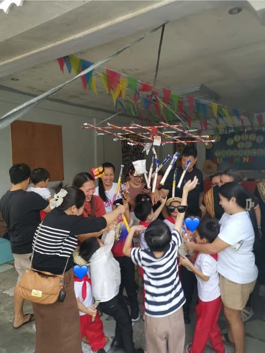

Speech & sounds
Producing speech sounds clearly and developing understandable speech.

02 / Speech Therapy
Speech-language support can help a person understand and share messages, communicate with others, and participate in conversations in ways that work for them.

Connection looks different for everyone.What speech-language therapy can support
Speech-language pathology includes many areas of communication. A child’s needs and goals guide what is addressed; these examples describe the field generally, not a confirmed list of TheraScene session activities.
Producing speech sounds clearly and developing understandable speech.
Understanding spoken language and sharing ideas, needs, questions, or stories.
Practicing ways to take turns, start or continue interactions, and connect with others.
A good first conversation
Tell the team what your child understands, how they currently express themselves, and what situations feel easy or difficult. Ask how the center identifies goals and how family members can support communication in everyday routines.
Availability, assessment steps, session format, and individual goals should be confirmed directly with TheraScene.
General information about the SLP scope from ASHA ↗